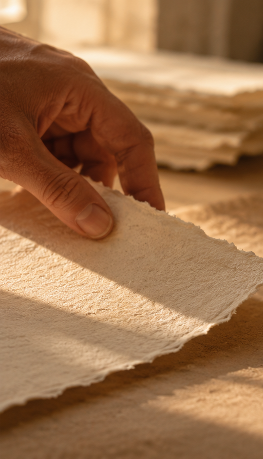
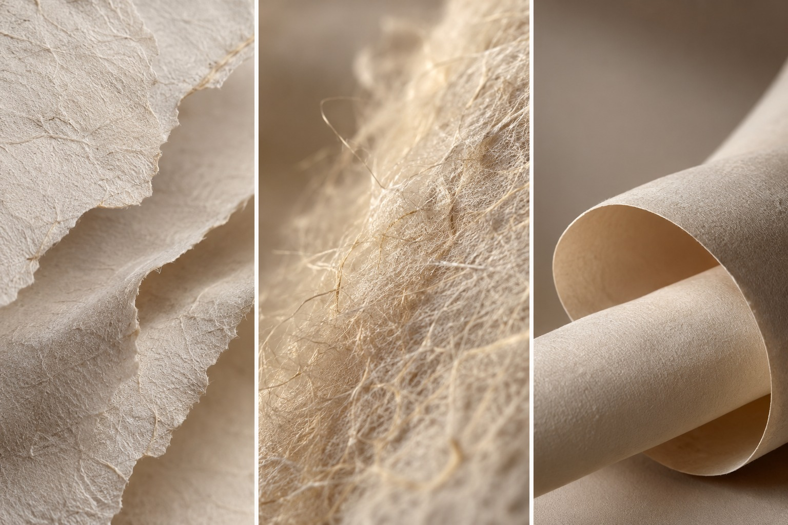
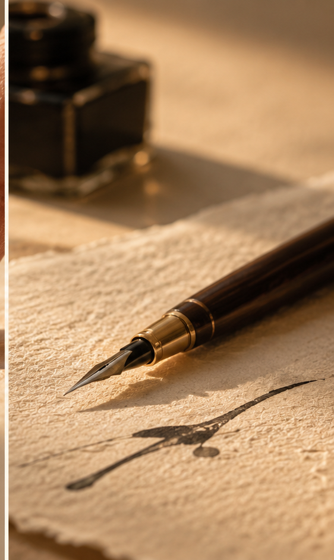
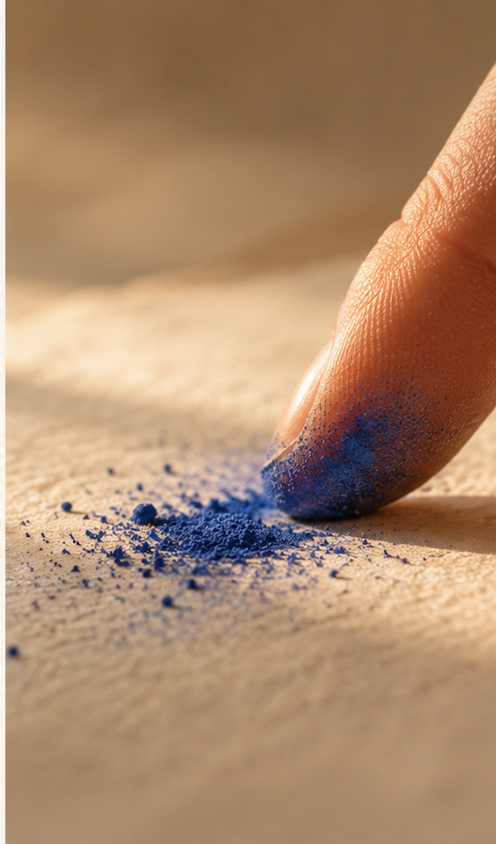
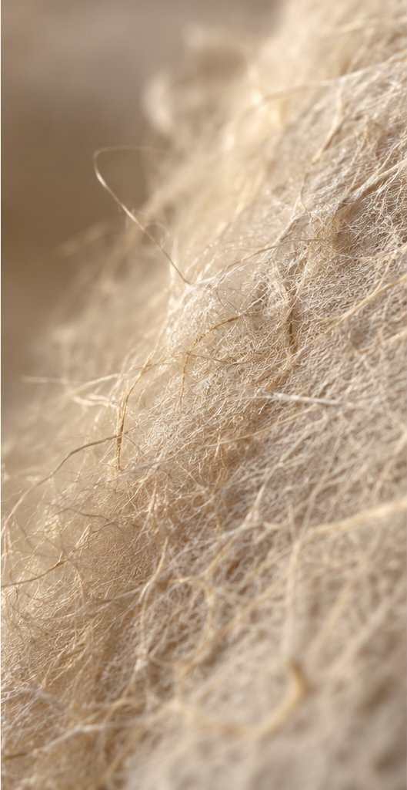

01 / Fibre & formPaper
A surface for knowledge. Handmade fibres, quiet irregularity and the enduring gesture of making.

A story, expressed in scent.
Discover the materials ↗A thousand years ago, in Samarkand, paper gave knowledge a lasting form, ink preserved ideas and lapis lazuli travelled the Silk Road. Inspired by these timeless materials, ANNO No. 01 translates their character into a contemporary fragrance.
Paper & Lapis — a story you can wear.

01 / Fibre & formA surface for knowledge. Handmade fibres, quiet irregularity and the enduring gesture of making.

02 / Ink & gestureA trace of thought. Deep black, fluid movement and the human mark that carries stories forward.

03 / Lapis & pigmentThe origin of ultramarine. A precious blue pigment connecting mineral, art and the written page.



A contemporary interpretation of paper, ink and ultramarine: dry, quietly textured and refined. Samarkand offers the historical context; the materials remain at the heart of the fragrance.
Green Cardamom · Dried Ginger
Paper Accord · Iris · Tea
Cedarwood · Olibanum · White Musk
The ANNO No. 01 retail price.
Discover the fragrance ↗Lapis lazuli was prized not only as a stone. Ground into pigment, it became ultramarine — an extraordinary blue used in art and manuscripts. For ANNO, the pigment is the visual expression; the stone is its origin.

Begin with the ANNO Discovery sample. Explore Paper & Lapis on your skin before choosing the full-size fragrance.
The sample price is fully credited towards your first 50 ml bottle purchase.
Ask about the Discovery sampleWe welcome conversations with selected perfumeries, concept stores and gift boutiques who share our appreciation for considered objects and distinctive fragrance.
Become a retail partner